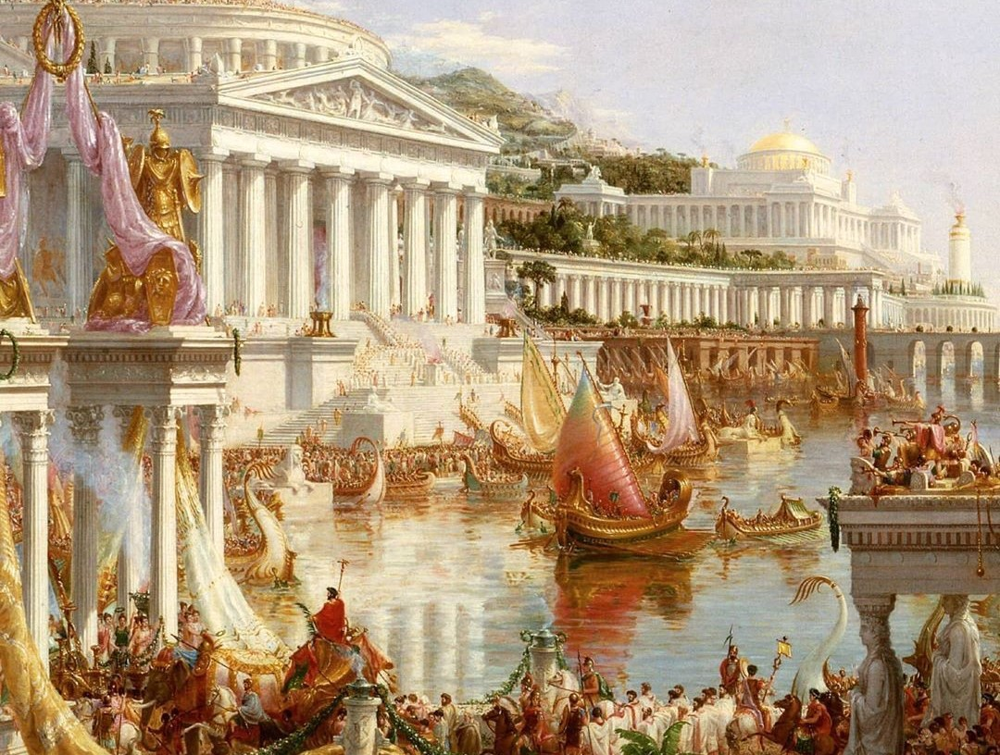

Antik Mısır
Nil Nehri çevresinde gelişen, piramitleri ve firavunlarıyla tanınan köklü bir uygarlık.
- Bölge: Kuzey Afrika
- Dönem: M.Ö. 3000 – M.Ö. 30
- Katkılar: Mimari, tıp, matematik
Tarih boyunca insanlığın gelişimine yön veren büyük uygarlıkları dönem, bölge ve kültürel özellikleriyle keşfedin.

Nil Nehri çevresinde gelişen, piramitleri ve firavunlarıyla tanınan köklü bir uygarlık.

Demokrasi, felsefe ve bilimin temellerinin atıldığı uygarlık.

Hukuk sistemi ve mühendislik alanındaki başarılarıyla tanınır.
İnsanlık tarihine yön veren medeniyetler
MÖ 3500 – Yazı, şehirler, hukuk
MÖ 3000 – Piramitler, mumyalama
MÖ 1200 – Felsefe, demokrasi
MÖ 27 – Hukuk, mühendislik
Yazının icadı, ilk kanunlar ve şehirleşme burada ortaya çıkmıştır.
Roma hukuku, mimarisi ve şehir planlaması modern dünyayı şekillendirmiştir.
Uygarlık
Yıllık Tarih
Çağ